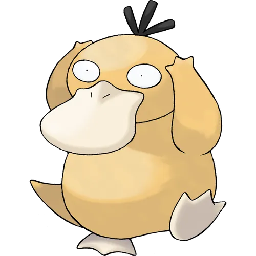

- 피카츄
- 고라파덕
- 잠만보

1세대부터 9세대까지 개근도장을 찍은 드문 포켓몬. 모티브는 오리 + 오리너구리. 진화형인 골덕은 캇파의 디자인도 참고한 듯하다. 진화 전 형태인 고라파덕의 한칭 어원은 골(머리)+아파+덕(Duck)이라고 한다. 그야말로 적절한 네이밍.
보통 애니판에서의 활약과 머리에 박힌 보석, 도감에도 대놓고 쓰여있듯 컨셉 자체가 에스퍼 포켓몬이다보니 에스퍼 타입을 가지고 있다고 생각되기 쉽지만 의외로 순수 물타입 포켓몬이다.
놀랍게도 포켓몬 중에서 헤엄을 제일 잘친다고 한다. 수중 전용인 물고기 포켓몬들보다 수륙양용인 골덕이 헤엄을 더 잘친다는 것인데, 의외의 사실이다. 참고로 강챙이가 앞다리만으로 태평양을 헤엄치는 수준이라는데, 얘는 그보다 헤엄을 잘 친다면 대체 얼마나 헤엄을 잘 치는지 상상이 안 되는 수준.
4세대 DPPT에선 봉신마을로 가는 길을 고라파덕 4마리가 막고있고, 난천이 비전신약을 주면 돌아간다. 돌아가는 모습이 살짝 개그인데, 한 마리가 멀뚱멀뚱거리거나 엉뚱한 길로 갈 뻔하다가 나머지 세 마리를 뒤늦게 따라간다.